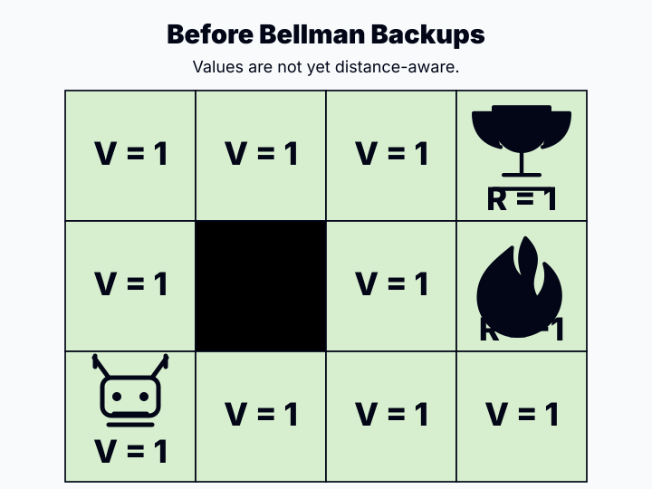
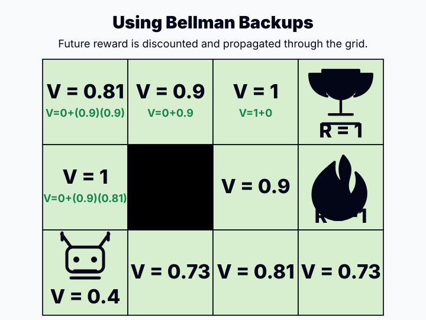

🎮 Bellman Optimality贝尔曼最优
Bellman Equations & Optimality
Bellman equations are the recursion that makes reinforcement learning computable: they turn a long-horizon decision problem into a one-step reward plus a value of the next state.
1. Concept Understanding
A value function is not just a table of scores. It must be consistent with the environment dynamics, the reward function, and the policy. The Bellman equation states this consistency condition.
Lecture 24 develops policy evaluation, Bellman optimality, value iteration, and policy iteration. HW5 Section 2 asks you to derive the same recursion from the definition of discounted return.
A policy $\pi^*$ is optimal if its expected return is at least as large as every other policy's return from every state.
For finite fully observable discounted MDPs, at least one deterministic optimal policy exists. Once $V^*$ or $Q^*$ is known, any policy that is greedy with respect to the optimal value is optimal.
2. Plain-English Explanation
Standing in a state is like standing at an intersection. The value is: what do I get immediately if I take this action, plus how good is the place I land afterward?
The optimal version adds one extra question: among all possible first actions, which one gives the best immediate-plus-future score?


3. Core Intuition
Discounting makes the future smaller by a factor $\gamma < 1$, so repeated Bellman backups cannot amplify errors forever. Each backup pulls value estimates closer to a fixed point.
This is why value iteration can converge and why Q-learning uses the same one-step target even when $P$ and $R$ are not explicitly known.
Fixed-policy evaluation is linear once the policy is known. Bellman optimality is different: the $\max$ over actions makes the equation non-linear, so we usually solve it by repeated backups.
Value iteration applies the optimal Bellman operator until convergence. Policy iteration alternates between policy evaluation and greedy policy improvement.
4. Key Equations
What it does. Definition of Q under a fixed policy: force action a first, then follow π and average future discounted rewards.
What it does. Expands Q into immediate reward, then averages over next states and next actions chosen by π.
What it does. Average the one-step quantity reward plus future value over the policy's actions and the environment's possible next outcomes.
What it does. Optimal value chooses the best first action, then assumes optimal behavior afterward. The $Q^*$ form says: reward now, then go to $s'$ and choose the best next action.
What it does. Greedy with respect to $Q^*$ is immediate: compare the stored action values. Greedy with respect to $V^*$ requires a one-step model-based lookahead through $p$ or $P,R$.
What it does. $T$ is one optimal Bellman backup. The contraction inequality says repeated backups shrink value-function error by a factor at most $\gamma$.
5. Worked Examples
Start with the discounted return definition. Pull out the first reward $R(s,a)$, then condition on the next state $s'$ and next action $a'$. The remaining tail of the return is exactly $Q^\pi(s',a')$, giving the Bellman equation.
If every reward is at most $R_{\max}$, the largest possible discounted sum is the geometric series $R_{\max}+ \gamma R_{\max}+\gamma^2R_{\max}+\cdots = R_{\max}/(1-\gamma)$. The same upper bound applies to $V^*$ and $Q^*$ whenever rewards are bounded above by $R_{\max}$.
For each state, compare the two maximized one-step backups. The immediate rewards cancel, the transition probabilities sum to 1, and the remaining difference is bounded by $\gamma\lVert V-U\rVert_\infty$.
6. Problem-Solving Tips
- Identify whether the question is policy-specific ($\pi$) or optimal ($*$).
- Write immediate reward first, then add discounted expected next value.
- Use $\sum_{a'}\pi(a'|s')$ for policy evaluation; use $\max_{a'}$ for optimality or Q-learning.
- For contraction proofs, take absolute values, use max-difference inequality, then use $\sum_{s'}P(s'|s,a)=1$.
- If asked why $Q^*$ is useful, say that $Q^*(s,a)$ lets the agent choose actions by direct comparison; $V^*(s)$ still needs a transition-model lookahead.
7. Common Mistakes
- Using $\max$ inside a policy-evaluation equation. Evaluation follows the given policy.
- Forgetting the expectation over stochastic next states.
- Dropping $\gamma$ in the contraction proof.
- Writing $V^*(s)=Q^*(s,a)$ for every action; it only equals the maximum over actions.
- Treating Bellman optimality like a linear policy-evaluation system. The max makes it non-linear.
8. Exam Focus
- Write $Q^\pi$ and $V^\pi$ definitions from memory.
- Derive the Bellman equation by splitting off the first reward.
- Write Bellman optimality equations and the greedy policy rule.
- Explain why Bellman backup is a $\gamma$-contraction in $\ell_\infty$.
- Know that finite discounted MDPs have a unique optimal value fixed point and at least one deterministic optimal policy.
- Mention the curse of dimensionality when asked about limitations: tabular DP scales badly as state variables multiply.
9. Quick Checklist
Last-minute recall
- Policy evaluation: average over $\pi$.
- Optimality: maximize over actions.
- Bellman target = reward now + discounted future value.
- Contraction factor is $\gamma$.
- Greedy policy comes from $\arg\max_a Q^*(s,a)$.
- $Q^*$ makes action selection model-free at decision time.
Bellman 方程与最优性
Bellman equations 是 RL 里把“长期决策”拆成“当前一步 + 后面价值”的递归工具。Lecture 24 系统讲 policy evaluation、Bellman optimality、value iteration 和 policy iteration，HW5 Section 2 也围绕它出题。
1. 概念理解
一个 value function 不能只是随便填的分数表；它必须和环境转移 $P$、奖励 $R$、策略 $\pi$ 一致。Bellman equation 就是在说：当前价值 = 当前奖励 + 折扣后的下一步价值。
如果是给定策略，就按策略平均；如果是最优控制，就对动作取最大。
Policy $\pi^*$ 是 optimal，意思是：从任意 state 出发，它的 expected return 都不低于任何其他 policy。
在 finite fully observable discounted MDP 中，至少存在一个 deterministic optimal policy。一旦知道 $V^*$ 或 $Q^*$，任何对 optimal value 做 greedy 的 policy 都是 optimal。
2. 大白话理解
把一个状态想成路口。你先选一个方向，马上拿到一点 reward，然后到达下一个路口。这个选择到底好不好，不只看眼前 reward，还看下一个路口未来有多值钱。
Bellman 的大白话就是：不要一次想完整条路，先想一步，然后把剩下的路交给 value function。
3. 核心直觉
折扣因子 $\gamma<1$ 会让未来影响变小，所以每做一次 Bellman backup，旧误差最多被乘上 $\gamma$。反复 backup 就像把估计往唯一 fixed point 拉近。
这也是 Q-learning 能工作的底层原因：即使不知道完整 $P$ 和 $R$，它也在用采样版的一步 Bellman target。
Fixed-policy evaluation 在 policy 已知后是 linear system；Bellman optimality 不一样，因为里面有对 actions 的 $\max$，这个 max 让方程变成 non-linear，通常不能像普通 policy evaluation 那样直接解析解。
Value iteration 就是反复套 optimal Bellman operator 直到收敛；Policy iteration 则交替做 policy evaluation 和 greedy policy improvement。
4. 关键公式
这个公式在做什么？ 固定策略下 Q 的定义：先强制做动作 a，然后按 π 继续行动，对未来折扣奖励求期望。
这个公式在做什么？ 把 Q 展开成即时奖励，然后对下一状态以及策略 π 选择的下一动作做平均。
这个公式在做什么？ 对“一步 reward + future value”做两层平均：先按 policy 平均 actions，再按 environment 平均 next outcome。
这个公式在做什么？ Optimal value 先选最好的 first action，然后假设未来也一直 optimal。$Q^*$ 形式就是：当前 reward，加上到达 $s'$ 后继续选择最佳 action 的价值。
这个公式在做什么？ 有 $Q^*$ 时，greedy 很直接：比较 $Q^*(s,a)$。只有 $V^*$ 时，需要用环境模型 $p$ 或 $P,R$ 做一步 lookahead 才能比较 actions。
这个公式在做什么？ $T$ 表示做一次最优 Bellman backup。Contraction 不等式说明反复 backup 会让 value function 误差最多按 $\gamma$ 收缩。
5. 例题精解
从 $Q^\pi(s,a)$ 的 discounted return 定义出发，先把第一步奖励 $R(s,a)$ 拿出来。后面的尾巴从 $s'$ 开始、动作按 $\pi$ 抽样，所以就是 $\sum_{a'}\pi(a'|s')Q^\pi(s',a')$。
如果每步 reward 最多是 $R_{\max}$，最乐观情况就是每一步都拿 $R_{\max}$：$R_{\max}+\gamma R_{\max}+\gamma^2R_{\max}+\cdots=R_{\max}/(1-\gamma)$。只要 reward 被 $R_{\max}$ 上界住，$V^*$ 和 $Q^*$ 也都不会超过这个上界。
比较 $TV$ 和 $TU$ 时，reward 项抵消；剩下 $\gamma\sum P(s'|s,a)(V(s')-U(s'))$。绝对值后用 $\|V-U\|_\infty$ 卡住每一项，再用概率和为 1，得到 $\gamma\|V-U\|_\infty$。
6. 题型与解题步骤
- 先判断是 policy evaluation 还是 optimality。
- 公式永远从 immediate reward 写起，再加 discounted future value。
- 给定策略用 $\sum_{a'}\pi(a'|s')$；最优或 Q-learning 用 $\max_{a'}$。
- 证明 contraction 时先写 $TV-TU$，再用 max 差值不等式和 $\sum P=1$。
- 问为什么用 $Q^*$：答 $Q^*(s,a)$ 可以直接比较 actions；只有 $V^*(s)$ 时还需要 transition-model lookahead。
7. 常见错误
- 把 policy evaluation 写成 $\max$；给定策略时必须按 $\pi$ 平均。
- 忘记 stochastic transition 需要对 $s'$ 求期望。
- contraction 证明漏掉 $\gamma$。
- 误以为 $V^*(s)$ 等于所有动作的 $Q^*(s,a)$；它只等于最大的那个。
- 把 Bellman optimality 当成 linear policy-evaluation system；里面的 max 让它变成 non-linear。
8. 考试重点
- 默写 $V^\pi$、$Q^\pi$ 定义。
- 从 discounted return 推出 Bellman equation。
- 写出 Bellman optimality equations 和 greedy policy。
- 解释 Bellman backup 为什么是 $\gamma$-contraction。
- 知道 finite discounted MDP 有唯一 optimal value fixed point，并且至少存在一个 deterministic optimal policy。
- 局限性要会提 curse of dimensionality：tabular DP 会随 state variables 增加迅速爆炸。
9. 速记清单
最后一刻能默
- Policy evaluation：按 $\pi$ 平均。
- Optimality：对动作取 max。
- Bellman target = 当前 reward + 折扣未来。
- Contraction factor 是 $\gamma$。
- 最优策略来自 $\arg\max_a Q^*(s,a)$。
- $Q^*$ 让决策时不需要 transition dynamics。